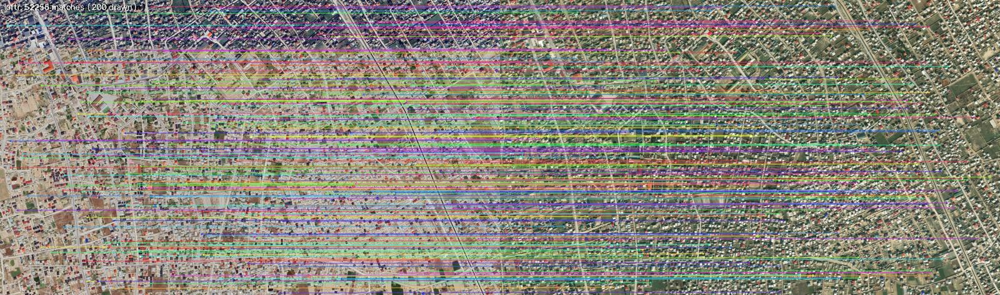
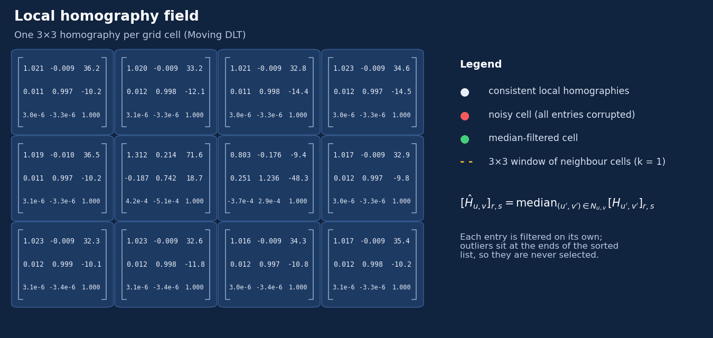

Coregistration pipeline
Hover over or tap a stage to see how it works.
Source +
reference
images
1 · Deep Learning: keypoint matching
Finds points that show the same ground location in both images.
- Our own matcher, built on LoFTR, runs on the image pair.
- It outputs a set of correspondences:
- No RANSAC filtering. Every match is passed on, and outliers are handled in step 3.
- How evenly the matches are spread, and how precise they are, decides the quality of the whole alignment.

LoFTR: 52,256 matches on a VHR pair (200 drawn).
2 · Homography: local fits with Moving DLT
One 3×3 homography per grid cell instead of a single global one.
- The source image is split into a regular grid of overlapping cells.
- Each cell fits its own APAP homography from all matches, giving more weight to those near the cell centre:
- Solved with a weighted SVD, after Hartley normalization.
cell 100×100 pxstride 50 px
σ = 2.0γ = 10⁻⁴
Hover over or tap a cell to see its support region (box) and the Gaussian weights of its fit (glow). Grid is coarsened here so it is visible.
3 · Noise Refinement: median de-ghosting
Filters the field of homographies instead of the matches.
- Bad matches corrupt a few cells, and their homographies cause ghosting in the warp.
- Each of the 9 entries is replaced by its median over a (2k+1)×(2k+1) window of neighbouring cells:
- Outliers end up at the ends of the sorted list, so the median never picks them.
- k is measured in cells, not pixels.
k = 1 window with two noisy cells (red). Hover over or tap any entry, including in the result.
Watch the animation

4 · Inverse Warping and blending
Each output pixel looks up where it came from in the source.
- For each output pixel p′ in cell (u,v), apply the refined homography in reverse:
- Inverse mapping leaves no holes. The non-integer source position is sampled with bilinear interpolation.
- Overlapping cell patches are blended by weighted average (Brown & Lowe). The weight is 1 at a cell's centre and 0 at its edge, so no seams show.
See the before / after results ›
Pixel by pixel, each cell pulls values from the source through its own homography.